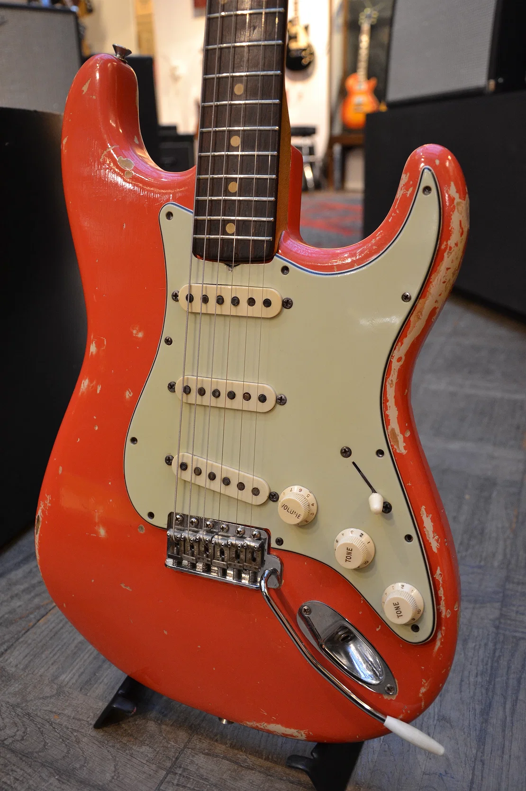
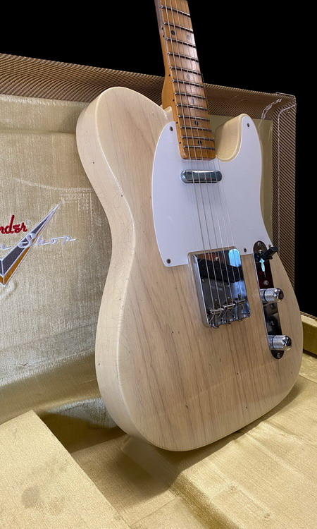
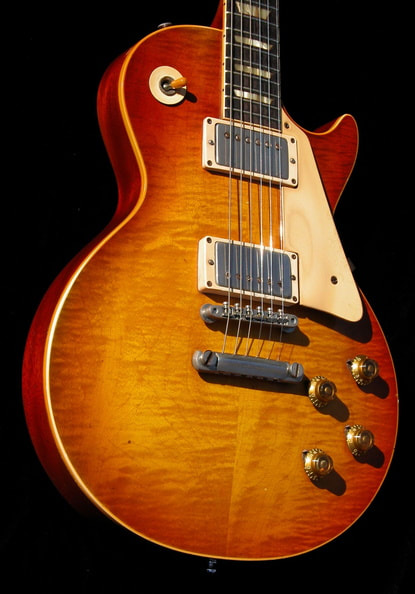
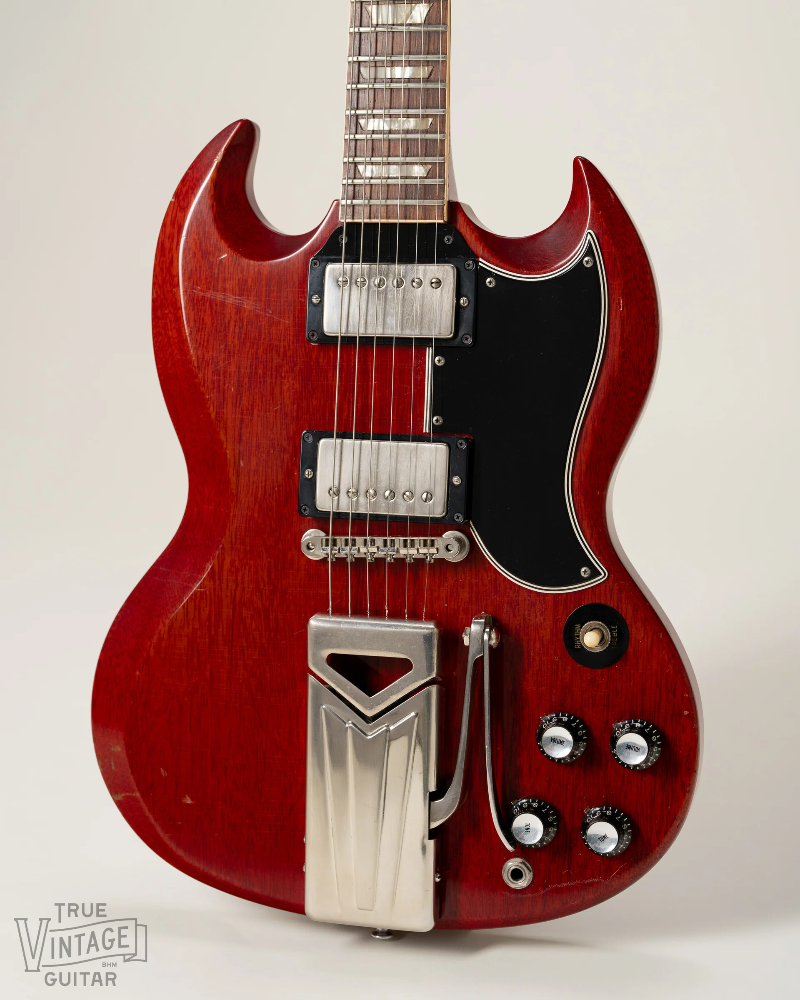

Catalogo Strumenti & Inventario Magazzino
Chitarre, Bassi, Batterie e Accessori Vintage selezionati.
Strumenti Vintage in Evidenza

Fender Stratocaster Fiesta Red (1962) - € 35.000

Fender Telecaster Blonde (1955) - € 20.000

Gibson Les Paul Sunburst (1957) - € 25.000

Gibson SG Cherry Red (1961) - € 20.000
Prospetto Completo Inventario Magazzino
| Codice | Prodotto | Categoria | Prezzo (€) | Disponibilità |
|---|---|---|---|---|
| CHT001 | Stratocaster Fiesta Red 1962 | Chitarre | 35.000 | 5 |
| CHT002 | Les Paul Sunburst 1957 | Chitarre | 25.000 | 2 |
| CHT003 | SG Cherry Red 1961 | Chitarre | 20.000 | 3 |
| CHT004 | Telecaster Blonde 1955 | Chitarre | 20.000 | 4 |
| BSS001 | Precision Bass | Bassi | 10.000 | 2 |
| BSS002 | Rickenbacker Bass | Bassi | 10.000 | 2 |
| BAT001 | Pearl Vintage Kit | Batterie | 10.000 | 1 |
| ACC003 | Accordatore Vintage | Accessori | 15 | 25 |
| ACC001 | Corde Chitarra | Accessori | 15 | 12 |
| ACC002 | Plettri Vintage | Accessori | 5 | 25 |
Servizio di Liuteria Completo
Forniamo interventi professionali su misura per chitarre e bassi: rettifica tastiera, refretting con tasti d'epoca, riparazione crepe nel legno, riavvolgimento pickup ed elettronica custom vintage.